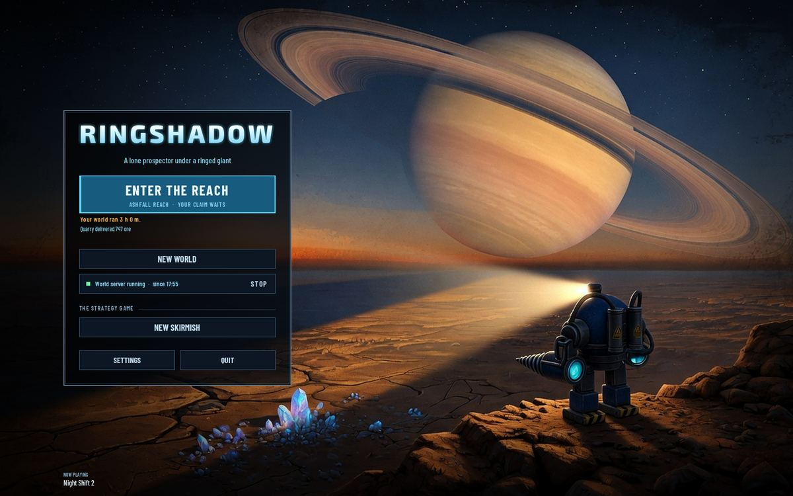
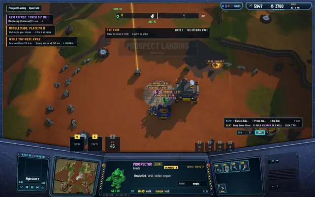
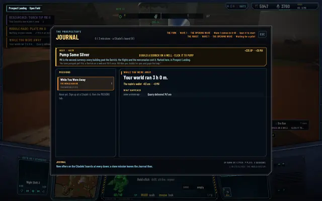

The away report: what your world did without you
The world runs on while you're away, and until today it kept that to itself. You came back to a different wallet, a crater that wasn't there, a canyon held or lost, and no account of any of it. Now the server keeps a ledger for every pilot off line, from its own bookkeeping, and reads it back to you four ways on the way in.

The ledger
While a pilot is off line the server writes a row for each thing it sees happen that concerns them, nothing made up. What each of their mercenaries delivered, added up, one row a mercenary. The frontier pilots' deeds: built, opened, surveyed. Raids told on a realm building, and a building taken. Canyon waves beaten, added up per canyon, a canyon held, a canyon fallen. The Matriarch down, with who hit her hardest, or back in her nest. Realm projects started, by whom, and run out. The ledger is saved with the world and, on the return, becomes a report with the time away and the realm wallet's change. It's sent once, in the first progress message after you enter, and then starts again empty.
Four ways in
On the home screen, under ENTER THE REACH, two lines: how long the world ran, in amber, and the most telling rows, with a count of the rest. They come from a small file the server writes beside the save on its idle ticks, so the home screen needs no connection to show them; they're what the server knew when it last wrote. On entering, a WHILE YOU WERE AWAY toast with the time, the first row and how many more. KSTR reads a welcome chosen by what the report holds: a building or a canyon lost or the Matriarch back gets one line, a canyon held another, the mercenaries' deliveries a third. And the Journal, L, opens on the report while it's unread: the time away, the wallet's change, every row newest first with how long before your return.
The pictures are from a hidden run that let the world run three hours on the server's catch-up with one mercenary at work, so the report holds a single row. A real evening away holds the lot.
And what now, after the Foundry
The same merge answers a question I asked the agents from my own game: I built a Foundry, but what now? The goal chain stopped there. It leads on now. Order a Module, with the Drill head Mk I's price from the rules, 100 ore and 50 MH in 60 seconds. Fit It, marked at your region's Citadel, where you unload. After Raise the Lab, Research Mk II, 300 MH and ten minutes. Six new radio lines came with it, the three welcomes and the three goals, between 4.5 and 5.5 seconds each. Protocol 31, save schema 23, and the suites at 505, 95 and 325.
- The home screen: the world ran three hours, the Quarry delivered 747 ore.

On entering: the toast, with the Quarry still at work and four frontier pilots at the Citadel.
The Journal's report: the time away, the realm wallet's change, the rows.